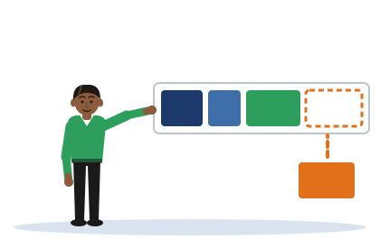

Build the Reference
[Illustrative example - do not cite] The conference paper is a pattern, not a real paper. The RFC and the NIST publication are real documents.
One idea
Every reference answers four questions: who, when, what and where. The kind of source changes the answers, and most of all the answer to "where".
